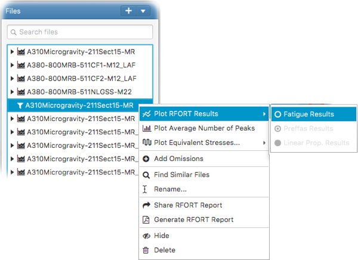

How to plot RFORT results
Once the RFORT analysis is complete, the RFORT fatigue, Preffas propagation and linear propagation results can be plotted by right clicking on the RFORT item in the file tree and selecting
Plot RFORT Results
as follows;
